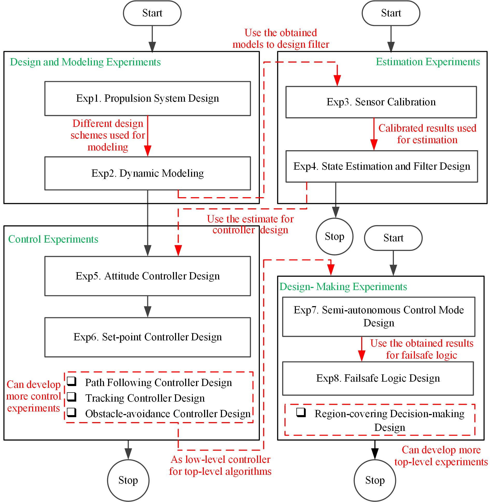

2. Course Content¶
This course includes twelve lessons: the first four lessons introduce the software and hardware platform of the experiments; the last eight lessons present eight experiments. The course experiments can be classified into four parts: design and modeling, estimation, control, and decision-making experiments.
After obtaining the installation package from the
the following four lessons will tell you how to install and apply the toolbox:
| Lessons | Code | |
|---|---|---|
| Lesson01: Course Introduction. | [pdf] |
|
| Lesson02: Experimental Platform Configuration. | [pdf] |
|
| Lesson03: Experimental Platform Usage. | [pdf] |
[e0] |
| Lesson04: Experimental Process. | [pdf] |
The following eight lessons correspond to the eight experiments of the course. We provide detailed code examples to ensure that each experiment or each part of an experiment can be finished independently.
| Experiments | Code | |
|---|---|---|
| Lesson05: Exp.1 Propulsion System Design. | [pdf] |
[e1] |
| Lesson06: Exp.2 Dynamic Modeling. | [pdf] |
[e2] |
| Lesson07: Exp.3 Sensor Calibration. | [pdf] |
[e3] |
| Lesson08: Exp.4 State Estimation and Filter Design. | [pdf] |
[e4] |
| Lesson09: Exp.5 Attitude Controller Design. | [pdf] |
[e5] |
| Lesson10: Exp.6 Set-Point Controller Design. | [pdf] |
[e6] |
| Lesson11: Exp.7 Semi-autonomous Control Mode Design. | [pdf] |
[e7] |
| Lesson12: Exp.8 Failsafe Logic Design. | [pdf] |
[e8] |
In the appendix, we introduce the advanced functions of RflySim platform. You can read the PPT to learn more.
| Appendix | Code | |
|---|---|---|
| Lesson13: Appendix.A RflySim Platform Advanced Features. | [pdf] |
|
| PPT ALL in ONE | [zip] |
The latest source code and pdfs also available at our Github Page: https://github.com/RflySim/RflyExpCode
